OpenShot 使用說明
資工碩一 109598051 陳守業
1
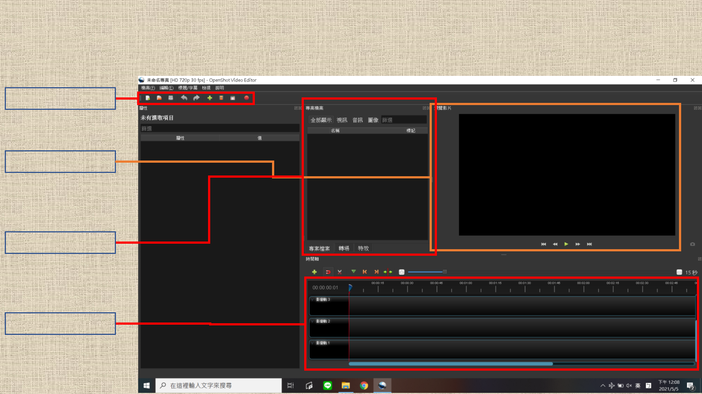
主頁面
工具列
影音軌
預覽介面
專案資源
2
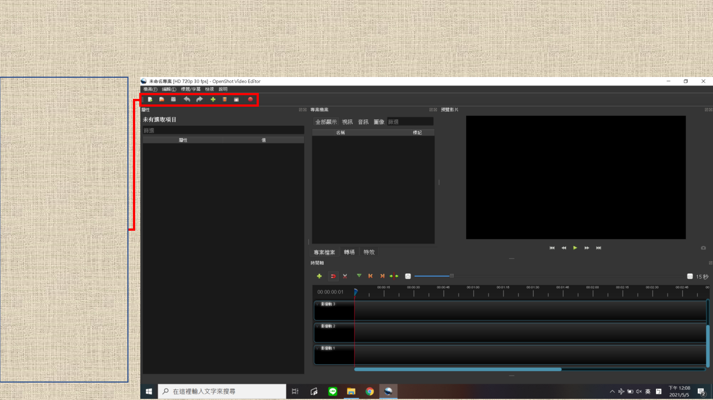
主頁面
工具列
類似快捷鍵的用途
左 3 項：
• 新專案
• 開啟專案
• 儲存專案
鄰近右側 2 項：
• 取消動作
• 重複動作
右四項：
• 匯入檔案
• 選擇設定組合
預覽形式設定
• 全螢幕
開 / 關全螢幕模式
• 匯出影片
3
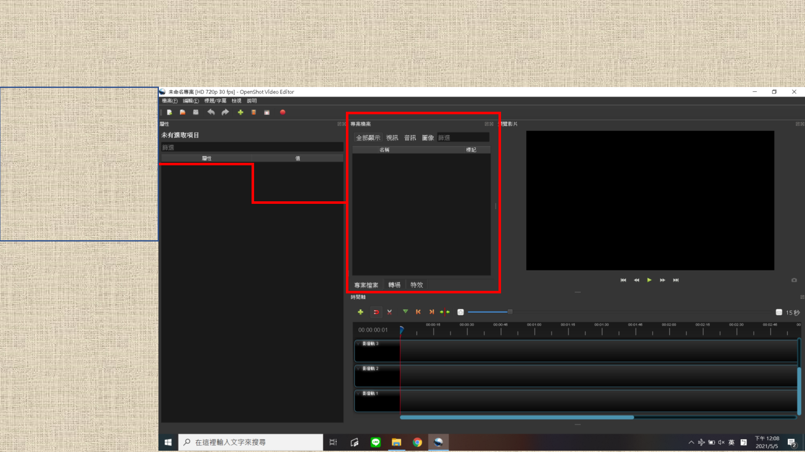
主頁面
專案資源
匯入 / 建立 / 內置的檔案
下方的選項：
切換清單類型
上方的選項：
篩選清單顯示項目
4
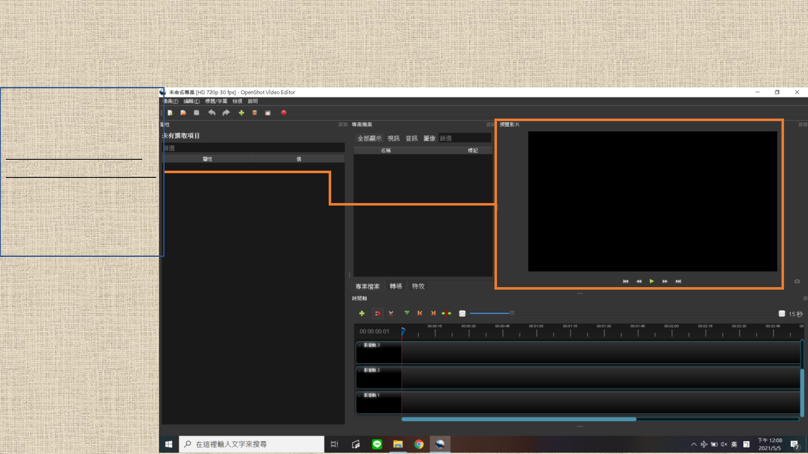
主頁面
預覽介面
匯出影片的預覽介面
檔案 – 選擇設定組合
工具列 --選擇設定組合
都可以設定預覽形式
框、線為橘色是為防止
P2 紅線交疊導致眼花
5
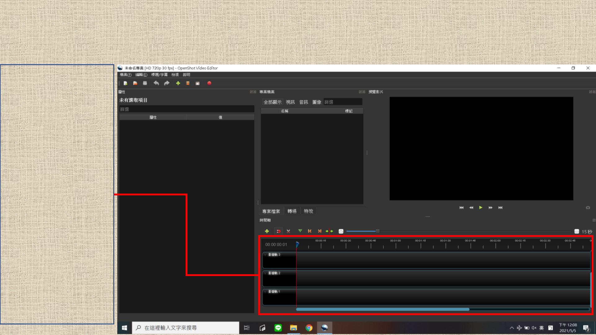
主頁面
影音軌
匯出影片的編輯介面
• 檔案要拖入其中才
可以被利用於影片
• 匯出的影片是由此
處的各影音軌內容
結合而成的
• 可以建立、利用多
條影音軌，是為了
編輯方便
• 只有一條的話，編
輯中資源會被混在
一起，同時間內容
會重疊
• 影片編輯軟體基本
上都會有可建立多
條影音軌的功能
6
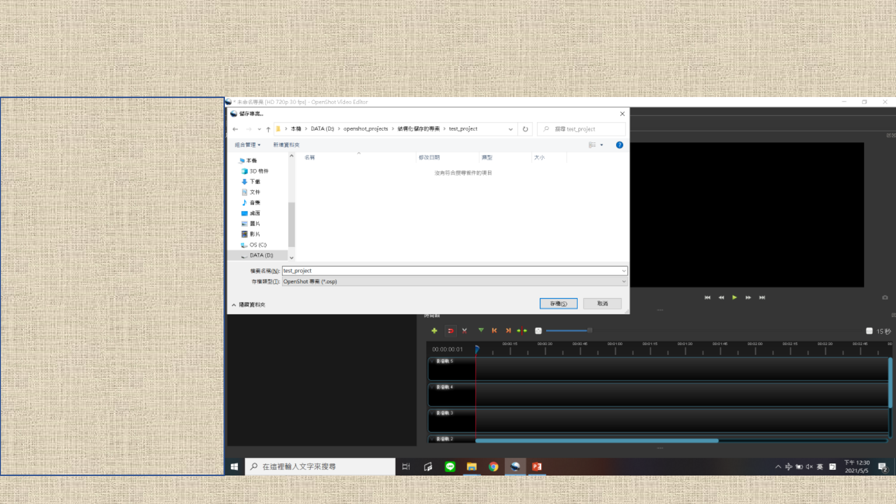
專案
圖中畫面會在第一次儲存一
個專案時出現
OpenShot 不會自動建立專案
資料夾 ，因此此時需要自行
新建資料夾，再選取、存檔
assets 資料夾、其餘生成檔
（e.g. 匯出的影片） 會生成
於專案檔所在目錄中（依賴
於相對路徑）
assets 資料夾會於整體被消
除 / 搬移時生成新的；內存
字幕、轉場特效等自製檔案，
因故重生時不會復原
7
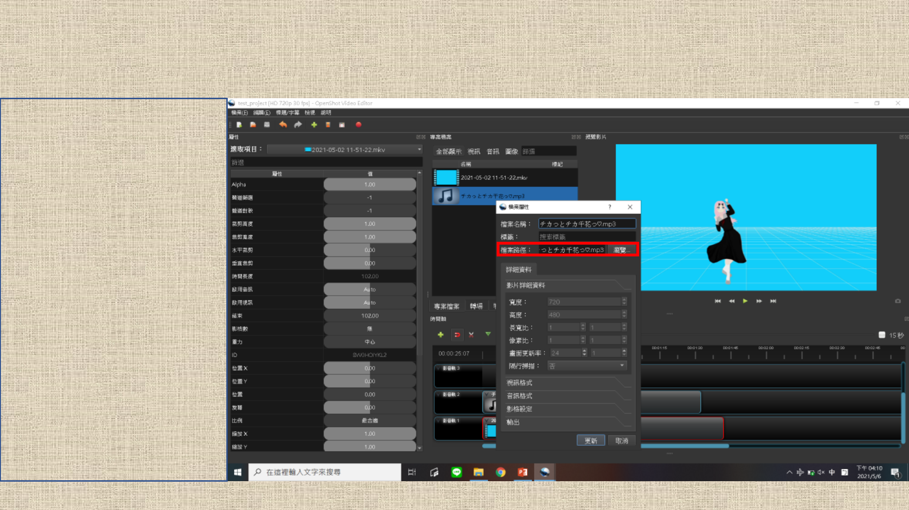
檔案匯入
按工具列 / 檔案的「匯入檔
案」按鈕即可匯入
匯入後的檔案憑依於該檔案
的絕對路徑，不會建立副本
對已匯入檔案按右鍵，選擇
檔案屬性，就能在圖中紅框
處更改路徑
已匯入檔案拉入任一影音軌，
即可創建一份相應片段於該
影音軌中
8
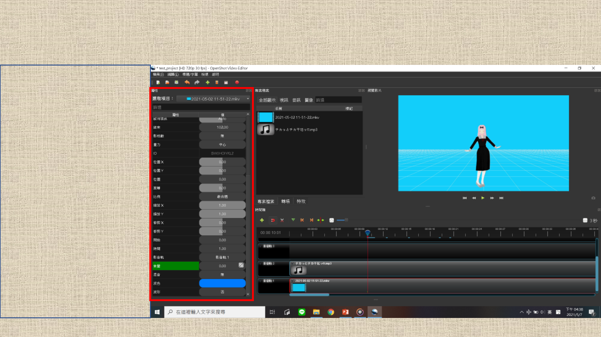
影片編輯 – 基本
上方水滴狀符號是用來選要
編輯、預覽的時間點的
選中影音軌的片段後，可以
看見圖中紅框內的屬性
9
影片編輯 – 關鍵影格
右鍵任一屬性可見「插入關
鍵影格」選項，可藉此直接
插入空白關鍵影格
編輯屬性後會自動做「插入
關鍵影格」動作，將片段選
定時間點後屬性改為設定值
關鍵影格所在時間，會有圖
中黃箭頭所指的小綠線
軟體會在開頭到該影格之間，
根據右鍵屬性值可調的函式，
進行漸變
轉到該時間點後，更動欄位
會呈綠色，右鍵屬性可見「
刪除關鍵影格」選項
10
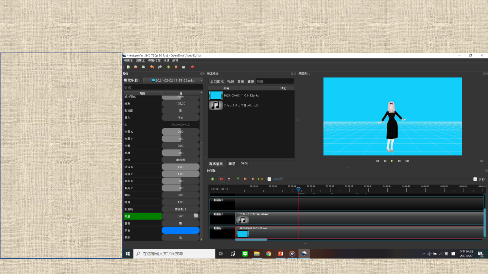
影片編輯 – 關鍵影格
想更動整個片段屬性，在 0
秒插入關鍵影格、編輯即可
想直接更動某時間點後屬性，
將漸變函式設「常數」即可
想在某區間內漸變，在起終
點各插入一關鍵影格，起始
處不做調整，在終點處將該
屬性設為目標值即可
其他延伸應用自行研究
11
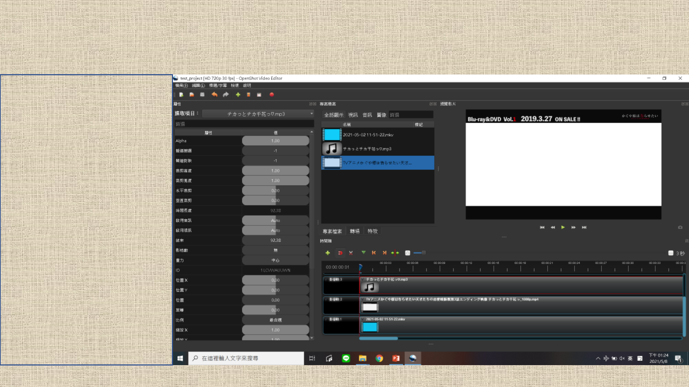
影片編輯 – Picture in Picture
將需要的資源拉入影音軌
時間轉到 0 秒，或是想要開
始 pic in pic 的時間
12
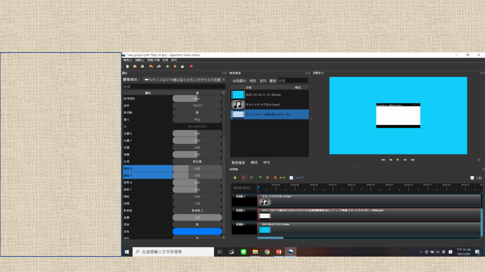
影片編輯 – Picture in Picture
選擇要縮小的片段，調整「
縮放 X」和「縮放 Y」
• 如果不是 0 秒，則根據需
要調整轉場函式
13
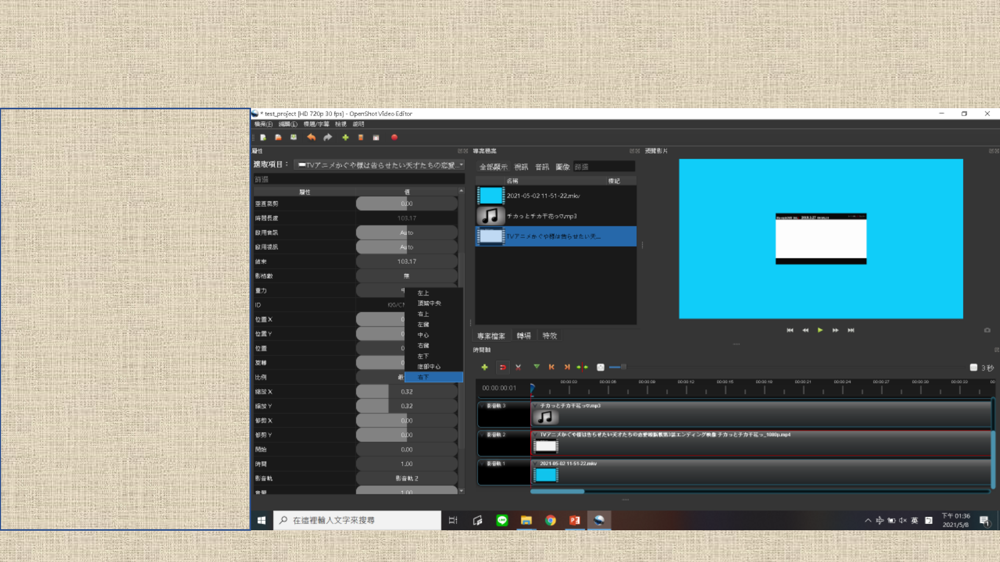
影片編輯 – Picture in Picture
右鍵「重力」屬性值，選擇
想要圖片所處的位置
14
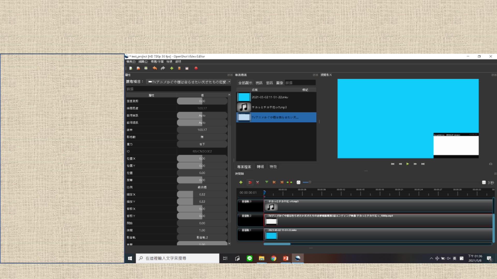
影片編輯 – Picture in Picture
「右下」選項效果範例
15
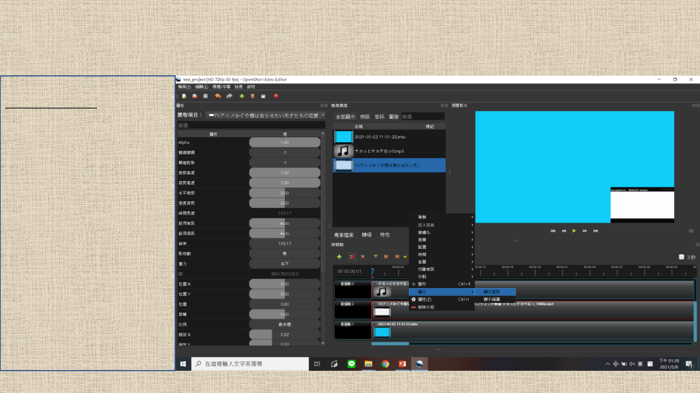
影片編輯 – 音樂對齊
右鍵片段，可以通過
顯示 – 顯示波形
選項，使介面展示該片段的
聲音波形
16
影片編輯 – 音樂對齊
將千花舞 .mp3 檔和 .mp4 檔
都開啟顯示波形的範例
17
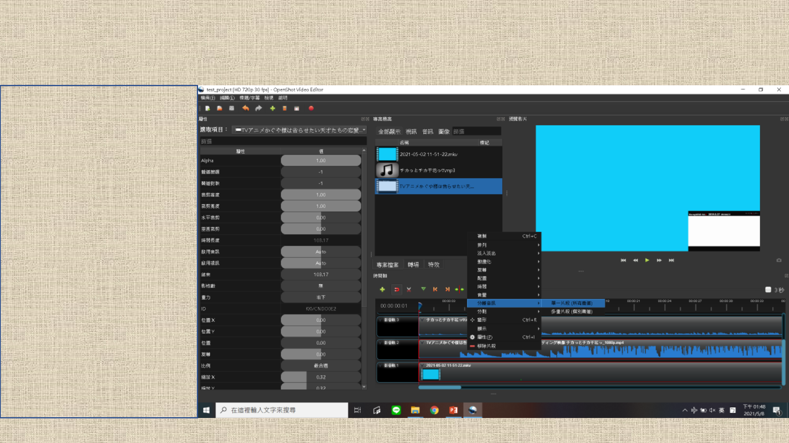
影片編輯 – 音樂對齊
順帶一提，選中分離音訊功
能，會導致單 / 多個顯示波
形或許相似，但音訊（聲道）
不同的片段出現，還有一個
沒有聲音，但顯示的波形是
完整音訊的片段單獨存在
此處沒有必要使用這個功能，
所以順便解說一下，以免按
到後不知道發生什麼事，作
業被妨礙
18
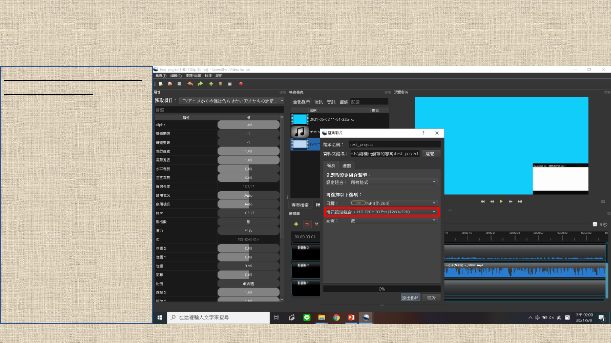
匯出影片
檔案 – 匯出專案 – 匯出影片
工具列 –匯出影片
都可以進入影片匯出介面
沒意外的話，要調的只有「
視訊設定組合」，長寬、
FPS 都組合好了，選需要的
即可
有進一步調整的需要的話，
可以切換成「進階」，可以
進行更精細的調整
19
其餘部分
• 字幕、轉場：
由於目前沒有用到，我就不寫教學了，只簡單討論
OpenShot 是可以直接實作這些的，字幕要自訂格式的話，要下載
Blender 並對字幕 .svg 檔進行編輯
• 層次：
影音軌的影像內容是有上下層關係的，編號越小的排在越下，會被上
層影音軌的影像內容遮蔽
• assets 內容路徑修復：
當 assets 資料夾相對路徑改變時，針對各個已創建檔案跳出的頁面，是
要使用者選「該檔案目前所在的資料夾」，而非「assets 資料夾」
20

結尾
由於是半自願寫的，而我的時間不多，所以只寫必要部分的教學，從基
礎到特定事項。必要以外部分我就省略了。
至於我特地花費時間，去寫這個連會不會被看到都不確定的教學，是因
為這個軟體是我推薦的，而祂不像其餘軟體，直觀但有缺陷、好用但難取得。
祂的操作並不直觀，有很多必須注意的細節，但是免費、近乎萬能，是取得
了詭異平衡的工具。
由於沒人教的話，想要快速拿來用會有所窒礙，而我無法斷言每個人都
跟我一樣，會直接拿來研究，而且可以快速上手，因此特地寫了一篇教學。
或許現在才抽空完成已經有點晚了，但總之我是寫出來了。
21
THE END
2021.5.8
22